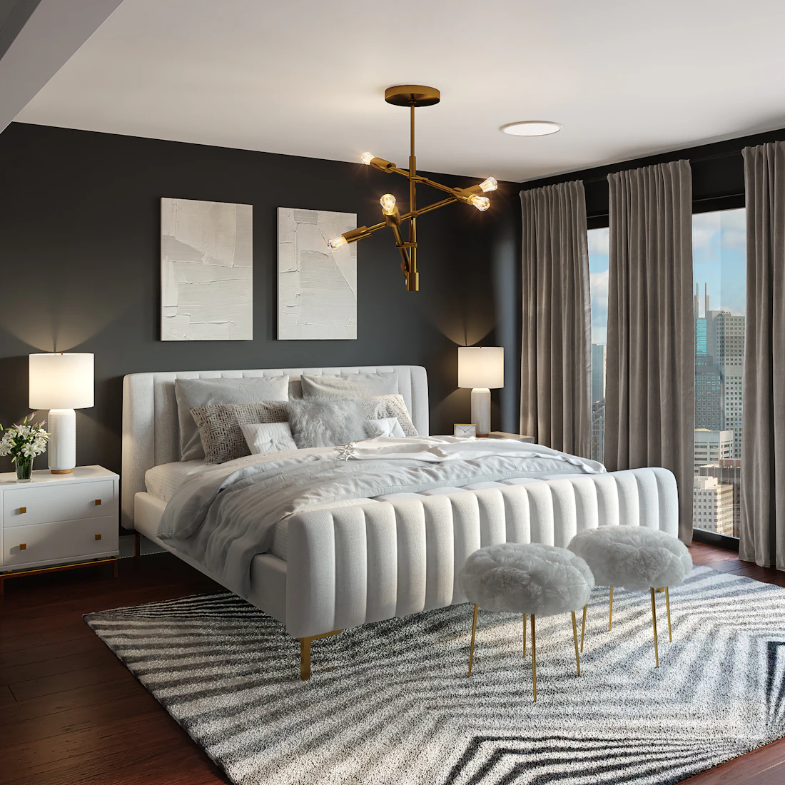
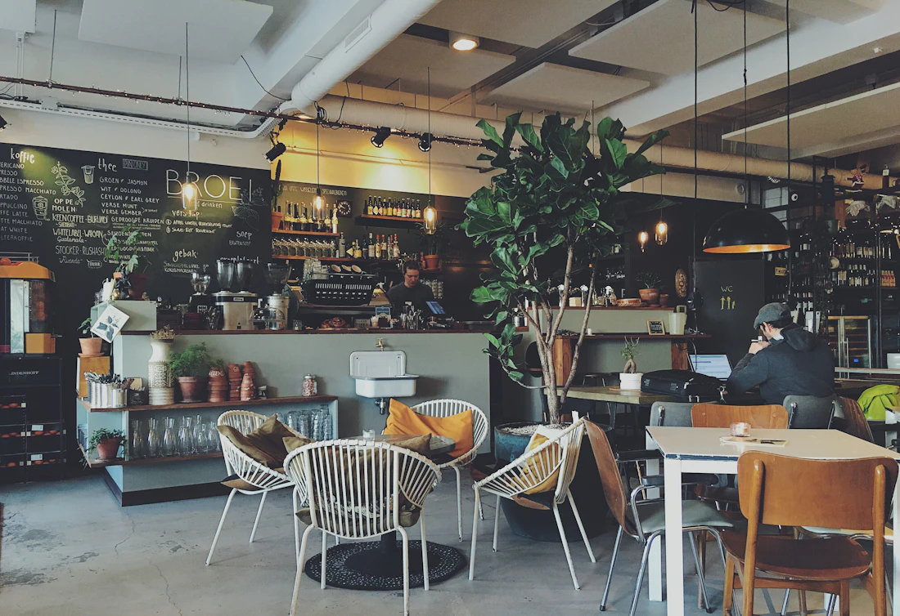
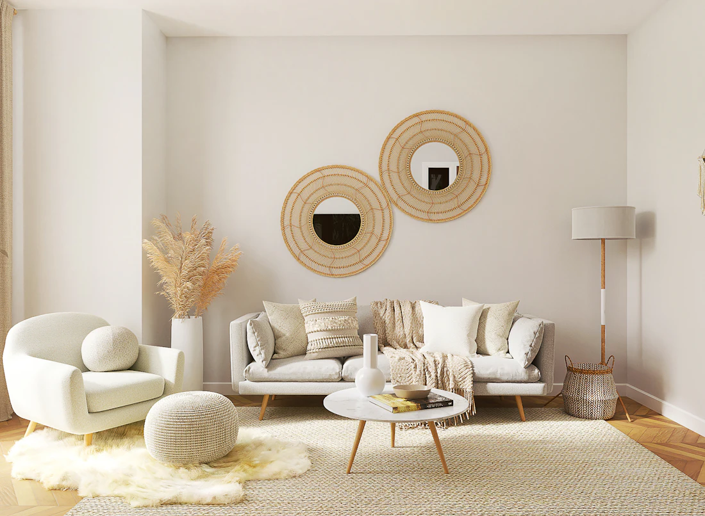

Studio desain interior & furnitur kustom, Semarang
Desain interior & furnitur kustom di Semarang.
Satu tim mengurus desain, produksi, dan pemasangan untuk rumah, apartemen, kafe, dan kantor. Dibuat sesuai ukuran ruangan Anda, bukan rak.
- Design & Build
- Satu alur kerja
- Custom
- Sesuai ukuran ruang
- Gratis
- Konsultasi awal
Ruang yang dipakai,
bukan cuma dipajang.
Interior yang baik tidak dimulai dari moodboard. Dimulai dari cara Anda memakai ruangan: di mana Anda duduk pagi hari, di mana anak bermain, di mana tamu berhenti.
Kami menerjemahkan kebiasaan itu jadi tata ruang, material, dan furnitur yang dibuat sesuai ukuran ruangan Anda.
Kenali studio kamiDimulai dari kebiasaan
Kami tanya dulu siapa yang pakai ruangan dan untuk apa, baru mulai menggambar.
Satu tim, satu tanggung jawab
Desain, produksi di bengkel, dan pemasangan dikerjakan tim yang sama.
Material yang menua dengan baik
Kayu, batu, dan kain dipilih karena makin lama makin enak dilihat.
Tiga cara kami
menata ruang.
Pilih yang paling dekat dengan kebutuhan Anda. Kalau belum yakin, mulai dari konsultasi gratis.

02 Interior KomersialKafe, toko, dan kantor. Ruang yang mendukung operasi dan citra brand Anda.
03 Furnitur KustomLemari, kitchen set, meja, dan dapur. Dibuat sesuai ukuran dan selera ruangan.
Hasil yang
bicara sendiri.
Kafe yang bikin
orang betah.
Bukan cuma soal kursi dan meja. Kami atur alur masuk, titik duduk, dan pencahayaan supaya orang betah lebih lama tanpa mengganggu kerja barista.
Lihat semua proyekDari obrolan
ke ruangan.
Empat langkah, satu tim. Tidak ada kejutan biaya di tengah jalan.
-
01
Konsultasi & survei
Kami dengar kebutuhan Anda, lalu ukur lokasi di Semarang dan sekitarnya.
-
02
Desain & penawaran
Konsep interior, gambar kerja, dan rincian biaya yang transparan.
-
03
Produksi
Furnitur dan elemen interior dibuat di bengkel kami sendiri.
-
04
Pemasangan
Tim memasang di lokasi dan memastikan hasilnya sesuai desain.
Punya ruangan
yang mau diubah?
Ceritakan idenya lewat WhatsApp. Konsultasi awal gratis, tanpa komitmen.
Melayani Semarang dan Jawa Tengah.